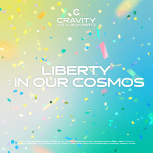

WELCOME TO OUR MUSIC CHART!
top-3 the best cravity albums!
Today I want to present to you the best music releases of the Korean pop group Cravity
MASTER:PIECE
Master : Piece (stylized in all-caps) is the fifth mini album by CRAVITY. It was released on March 6, 2023 with "Groovy" serving as the album's title track.
Tracklist
"Groovy" - 3:22 "Fly" - 3:17 "Get Lifted" - 3:05 "Baddie" - 3:29 "A to Z" - 3:27 "Light The Way" - 3:19
Liberty: In Our Cosmos
Liberty: In Our Cosmos (alternatively titled Cravity 1st Album Part 2 [Liberty: In Our Cosmos]) is the second studio album by South Korean boy band Cravity. It was released on March 22, 2022, by Starship Entertainment and distributed by Kakao Entertainment.
Tracklist
"Groovy" - 3:22 "Adrenaline" - 3:14 "Pow!" - 2:51 "Boppin'" - 3:36 "Chandelier" - 3:01 "Flip The Frame" - 3:22 "Maybe Baby (좋아하나봐)" - 2:50 "Late Night" - 3:09 "Outro : In Our Cosmos" - 1:27
Sun Seeker

Sun Seeker (stylized in all-caps) is the sixth mini album by CRAVITY. It will be released on September 11, 2023 with "Cheese" and "Ready or Not" serving as the album's double title tracks.
Tracklist
"Groovy" - 3:22 "Cheese" - 3:26 "Ready or Not" - 3:11 "Megaphone" - 3:09 "Vibration" - 3:36 "9 o'clock" - 3:04 "Love Fire" - 3:06